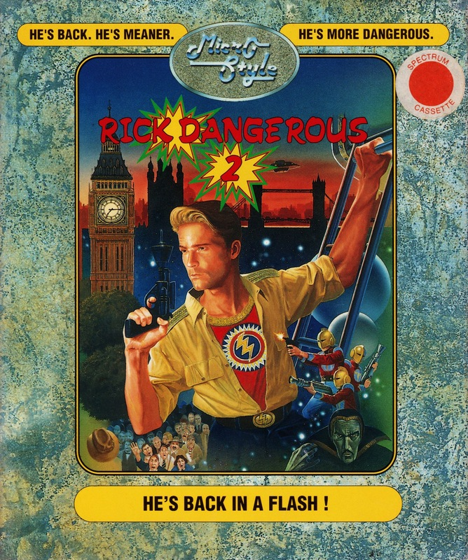
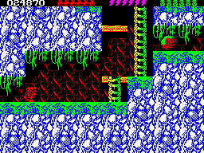

Rick Dangerous 2


{kind=link}

| Publisher: | MicroStyle |
| Price: | £9.99 / £14.99 |
| Year: | 1990 |
| Source: | CRASH, Issue 82 |

In this sequel to the well received original, Rick’s back in action to thwart an alien fleet from the planet Barf, landed on Earth. The game starts in Hyde Park where he hijacks one of the Barfian ships. To defeat the guards and robots swarming around the platforms he’s armed with a ray gun and grenades: both are limited but supplies can be found scattered around. And again, as in the original Rick Dangerous, many devious traps and pitfalls face our intrepid explorer.
Once aboard the ship Rick heads for the control room through screens packed with platforms, puzzles, traps and Barfian guards! Some traps can be deactivated by triggering switches, whilst others need careful timing to pass.

Level two takes you to the Ice Caverns of Freezia. Rick battles with the unpleasant inhabitants of this frozen realm and ducks the myriad laser bolts, snowballs and falling stalactites that come his way. Again switches deactivate traps, but watch out for red herrings as death is only just around the corner!
Having escaped from the Ice Caverns the third level is set in the Forests Of Vegetabilia: man-eating plants, rolling boulders, guards, sharpened sticks are just some of the problems. Level four takes him to the Atomic Mud Mines and then it’s onto level five set in Barfatatropolis, the alien’s HQ.
It’s great to see Rick back again. I really enjoyed the first game with its vicious inhabitants and devious traps, and part two is just as tough. One neat feature is the ability to practise the first four levels, but to complete you have to play through the whole game to reach the final showdown.
Graphically Rick Dangerous II is very impressive, even though some of the hazards are difficult to see. It’s really very similar to the original — but that’s no bad thing, as it’s one of the most playable platform games around!
MARK — 90%
It’s more of the same so the novelty of the cute graphics and ‘interesting’ nasties has worn off. Don’t get me wrong, this is a great game, but if you played the original you’ll already know how to get past some of the traps (if you can spot them!). Graphically this is also almost exactly the same with a few new ideas thrown in to make up the backgrounds in the various stages. There is far more colour though, and as a result you have to put up with some of that annoying clash the Spectrum is famous for. There are tunes at the beginning of each of the levels which, unfortunately, slow right down when anything fires at you, making them unbearable to listen to.
Rick Dangerous II may not be the most original game ever but is certainly loads of fun.
NICK — 90%
RATING
A number one platform game returns with smashingly equal results
| Presentation: | 85% |
| Graphics: | 87% |
| Sound: | 82% |
| Playability: | 88% |
| Addictivity: | 86% |
| Overall: | 90% |